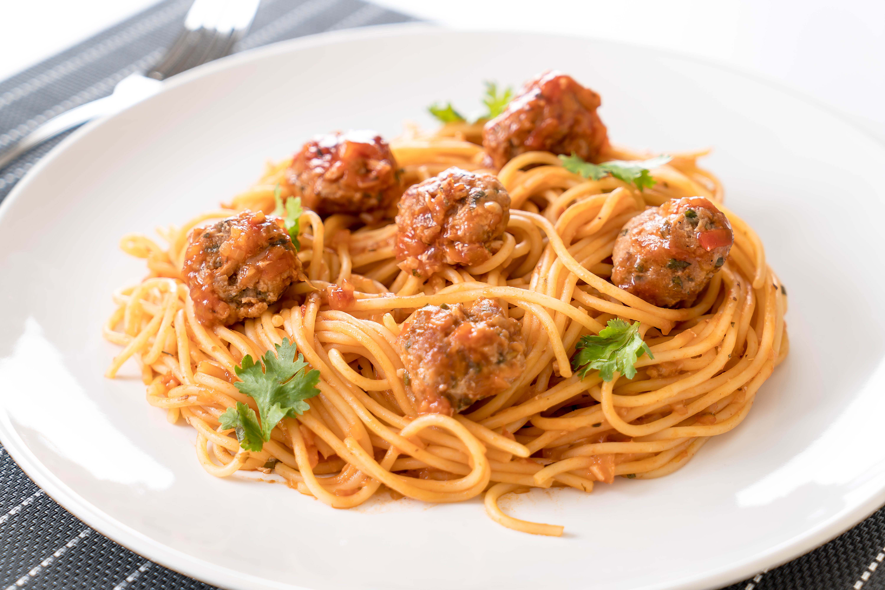
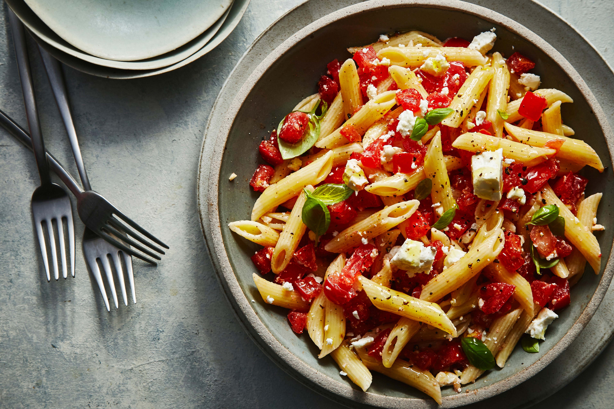
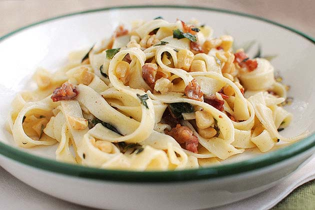
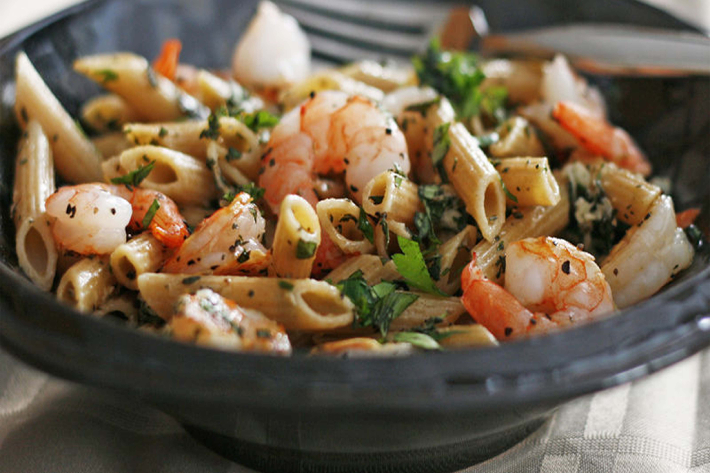
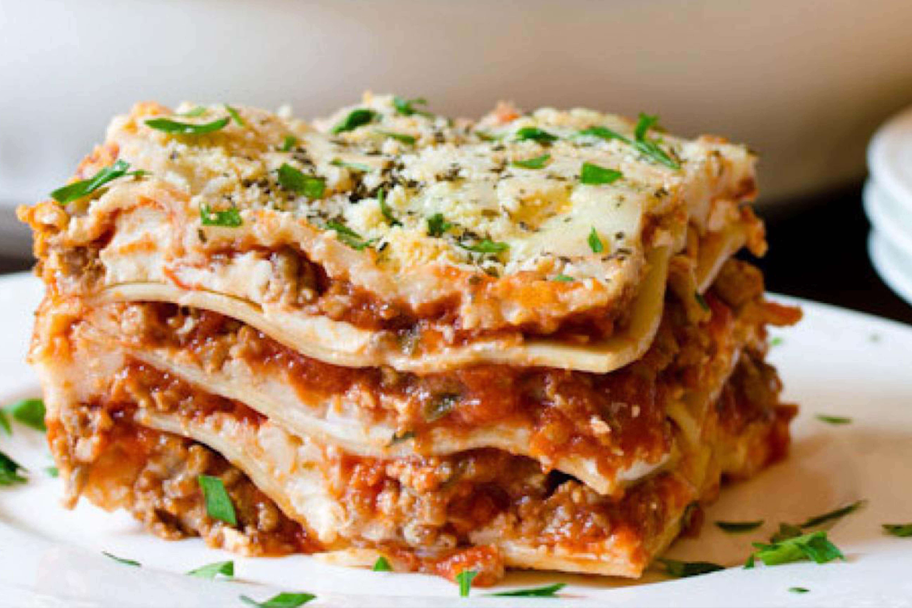
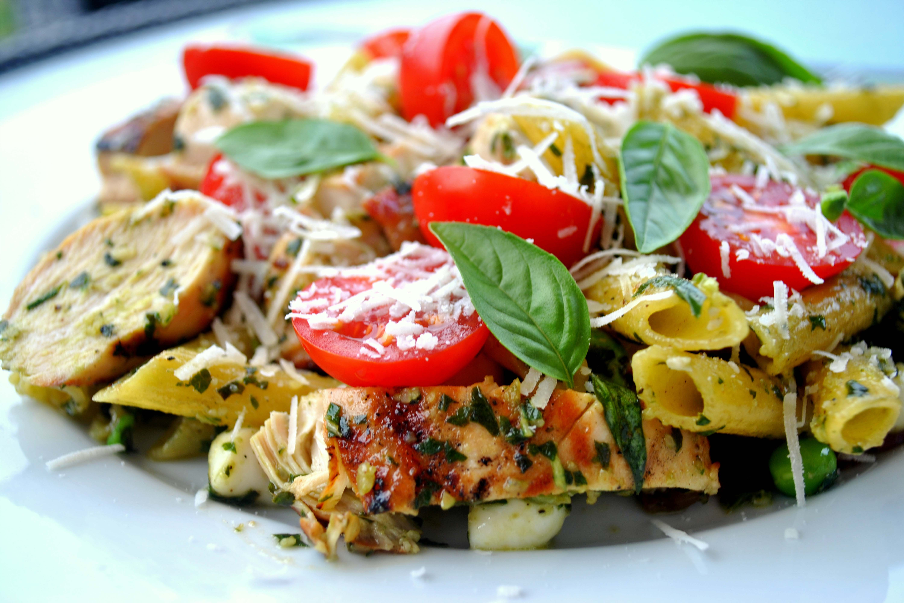

Trigo
Home
About Us
Contact Us
Gallery
(current)
Gallery
Easy Meatball Stroganoff
Easy Meatball Stroganoff

Pepperoni Penne Carbonara
Pepperoni Penne Carbonara

Artichoke Blue Cheese Fettuccine
Artichoke Blue Cheese Fettuccine

Mediterranean Shrimp Linguine
Mediterranean Shrimp Linguine

Ravioli Lasagna
Ravioli Lasagna

Lemon Chicken with Orzo
Lemon Chicken with Orzo
